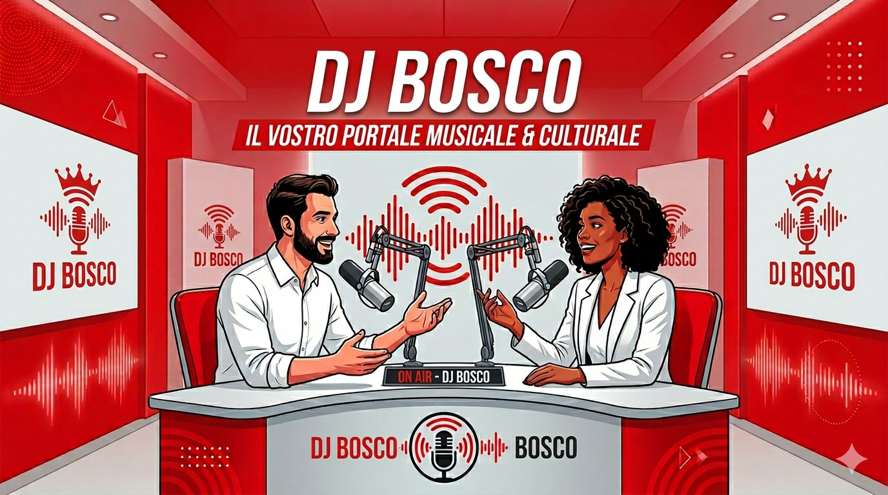

DATA
Placeholder nome evento 1
Qui va una descrizione breve dell'evento, di cosa succede e del coinvolgimento della radio.
APPUNTAMENTI
Placeholder: qui va inserita una presentazione della sezione eventi, spiegando quali appuntamenti vengono pubblicati e che relazione hanno con la radio.

DATA
Qui va una descrizione breve dell'evento, di cosa succede e del coinvolgimento della radio.
DATA
Qui va una descrizione breve dell'evento, di cosa succede e del coinvolgimento della radio.
DATA
Qui va una descrizione breve dell'evento, di cosa succede e del coinvolgimento della radio.
COME PARTECIPARE
Qui va spiegato come si segnala un evento alla redazione e quali informazioni bisogna inviare per pubblicarlo o promuoverlo.
Placeholder contatto redazioneCOPERTURA RADIO
Qui va spiegato che tipo di copertura puo fare la radio: diretta, articoli, interviste, contenuti social o podcast collegati all'evento.
Placeholder link approfondimenti